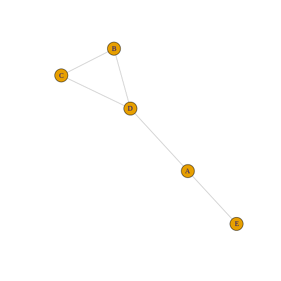
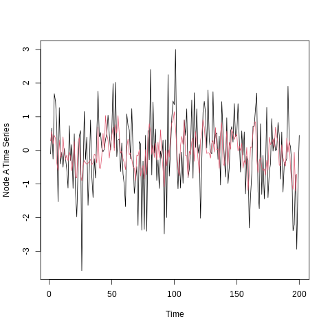

import rpy2
import rpy2.robjects as ro
from rpy2.robjects.vectors import FloatVector
from rpy2.robjects.packages import importrGNAR
%load_ext rpy2.ipython%%R
library(GNAR)
library(igraph)Ex 1
%%R
plot(fiveNet, vertex.label = c("A", "B", "C", "D", "E"))
%%R
summary("fiveNet") Length Class Mode
1 character character %%R
fiveNet2 <- GNARtoigraph(net = fiveNet)
summary(fiveNet2)IGRAPH eee756c U-W- 5 5 --
+ attr: weight (e/n)%%R
fiveNet3 <- igraphtoGNAR(fiveNet2)
all.equal(fiveNet, fiveNet3)[1] TRUEwhereas the reverse conversion would be performed as
%%R
g <- make_ring(10)
print(igraphtoGNAR(g))GNARnet with 10 nodes
edges:1--2 1--10 2--1 2--3 3--2 3--4 4--3 4--5 5--4 5--6
6--5 6--7 7--6 7--8 8--7 8--9 9--8 9--10 10--1 10--9
edges of each of length 1 we can prosucean adjacency matrix for the fiveNet obeject with
%%R
as.matrix(fiveNet) [,1] [,2] [,3] [,4] [,5]
[1,] 0 0 0 1 1
[2,] 0 0 1 1 0
[3,] 0 1 0 1 0
[4,] 1 1 1 0 0
[5,] 1 0 0 0 0and an example converting a weighted adjacency matrix to a GNARnet object is
%%R
adj <- matrix(runif(9), ncol = 3, nrow = 3)
adj[adj < 0.3] <- 0
print(matrixtoGNAR(adj))WARNING: diagonal entries present in original matrix, these will be removed
GNARnet with 3 nodes
edges:1--3 2--1 2--3 3--1
edges of unequal lengths Ex 2.
%%R
data("fiveNode")
answer <- GNARfit(vts = fiveVTS, net = fiveNet, alphaOrder = 2, betaOrder = c(1, 1))
answerModel:
GNAR(2,[1,1])
Call:
lm(formula = yvec ~ dmat + 0)
Coefficients:
dmatalpha1 dmatbeta1.1 dmatalpha2 dmatbeta2.1
0.20624 0.50277 0.02124 -0.09523
%%R
plot(fiveVTS[, 1], ylab = "Node A Time Series")
lines(fitted(answer)[, 1], col = 2)
%%R
myresiduals <- residuals(answer)[, 1]
layout(matrix(c(1, 2), 2, 1))
plot(ts(residuals(answer)[, 1]), ylab = "`answer' model residuals")
hist(residuals(answer)[, 1], main = "", xlab = "`answer' model residuals")
Ex 3.
- Ex 1. 이어서
%%R
set.seed(10)
fiveVTS2 <- GNARsim(n = 200, net = fiveNet, alphaParams = list(c(0.4, 0, -0.6, 0, 0)), betaParams = list(c(0.3)))%%R
print(GNARfit(vts = fiveVTS2, net = fiveNet, alphaOrder = 1, betaOrder = 1, globalalpha = FALSE))Model:
GNAR(1,[1])
Call:
lm(formula = yvec ~ dmat + 0)
Coefficients:
dmatalpha1node1 dmatalpha1node2 dmatalpha1node3 dmatalpha1node4
0.45902 0.13133 -0.49166 0.03828
dmatalpha1node5 dmatbeta1.1
0.02249 0.24848
%%R
set.seed(10)
fiveVTS3 <- GNARsim(n = 200, net = fiveNet, alphaParams = list(rep(0.2, 5), rep(0.3, 5)), betaParams = list(c(0.2, 0.3), c(0)))
print(GNARfit(vts = fiveVTS3, net = fiveNet, alphaOrder = 2, betaOrder = c(2,0)))Model:
GNAR(2,[2,0])
Call:
lm(formula = yvec ~ dmat + 0)
Coefficients:
dmatalpha1 dmatbeta1.1 dmatbeta1.2 dmatalpha2
0.2537 0.1049 0.3146 0.2907
Missing data and changing connection weights with GNAR models
- as changing connection weights
- overall network os considered fixed
%%R
fiveVTS0 <- fiveVTS
fiveVTS0[50:150, 3] <- NA
nafit <- GNARfit(vts = fiveVTS0, net = fiveNet, alphaOrder = 2, betaOrder = c(1, 1))
layout(matrix(c(1, 2), 2, 1))
plot(ts(fitted(nafit)[, 3]), ylab = "Node C fitted values")
plot(ts(fitted(nafit)[, 4]), ylab = "Node D fitted values")
Stationary conditions for a GNAR process with fixed network
%%R
set.seed(10)
fiveVTS4 <- GNARsim(n = 200, net = fiveNet, alphaParams = list(rep(0.2, 5)), betaParams = list(c(0.85)))
c(mean(fiveVTS4[1:50, ]), mean(fiveVTS4[51:100, ]), mean(fiveVTS4[101:150, ]), mean(fiveVTS4[151:200, ]))[1] -120.511 -1370.216 -15725.884 -180319.140%%R
BIC(GNARfit())[1] -0.003953124%R -o x_1
%R -o index_of_trueoutlier_1
%R -o signal_1